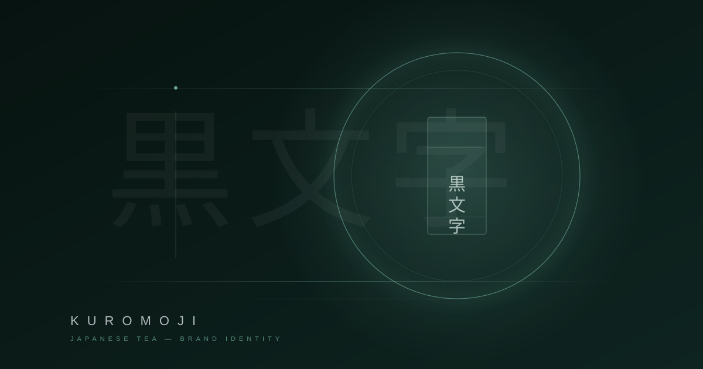

京都で200年続く老舗茶舗「黒文字」のリブランディング。伝統の重みを損なうことなく、次の世代に届く言語へ翻訳する — それがこのプロジェクトの核心だった。

黒文字茶舗は創業1824年。京都・宇治に本店を構え、最高品質の日本茶を提供し続けてきた。しかし顧客層の高齢化、EC市場への対応遅れ、ブランドイメージの硬直化が課題だった。
リブランディングでは「静寂の中の豊かさ」をコンセプトに、伝統的な茶の世界観を現代のビジュアル言語に再構築。ロゴマーク、パッケージ、Webサイト、店舗空間のデザインを一貫して手がけた。
まず宇治の茶畑を訪れ、茶師たちの所作や空間の空気感を徹底的にリサーチした。そこで感じた「余白が生む緊張感」をデザインの軸に据えた。
ロゴは黒文字の漢字をモチーフに、筆のかすれと幾何学的な構成を融合。パッケージは漆黒の和紙に金箔の最小限のタイポグラフィのみ。語りすぎないデザインが、茶そのものの品格を引き立てる。
リブランディング後、ECサイトの売上は前年比180%成長。20〜30代の新規顧客層が2.4倍に増加した。パッケージデザインはPentawards 2024でGoldを受賞。
何より嬉しかったのは、老舗の茶師から「新しいのに、うちらしい」と言われたこと。伝統を壊さず、未来に繋ぐ — そのバランスを実現できたプロジェクトだった。